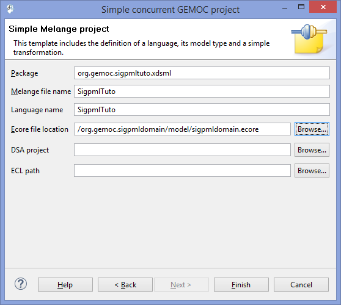
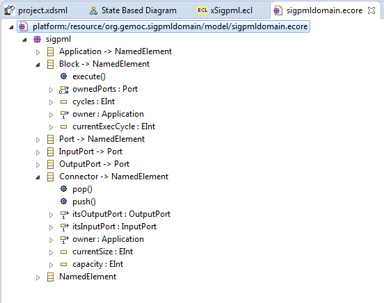
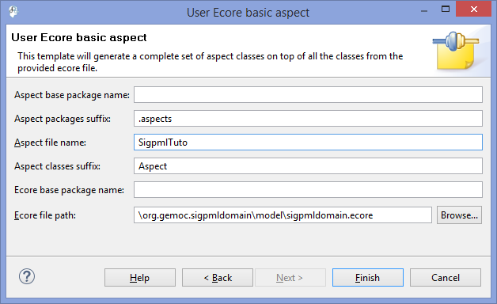
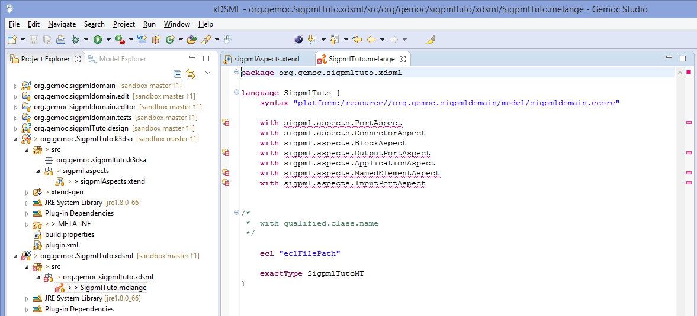
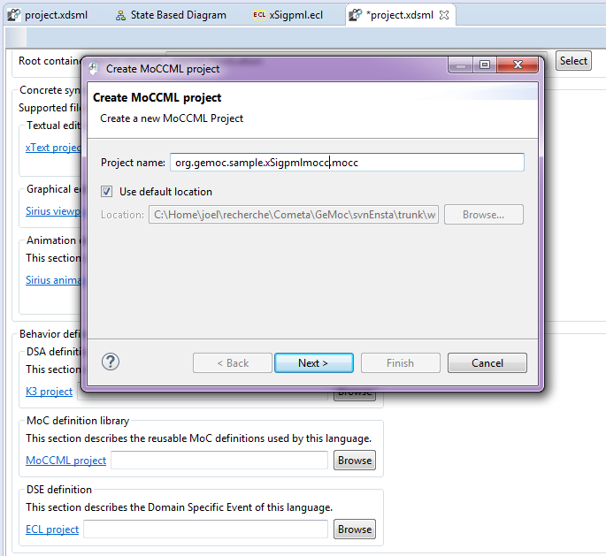
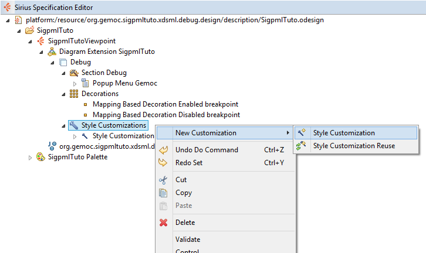
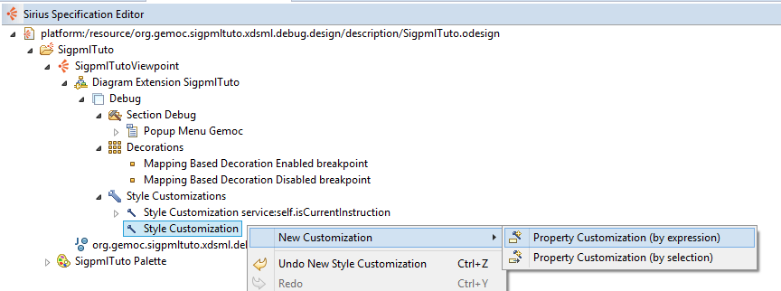
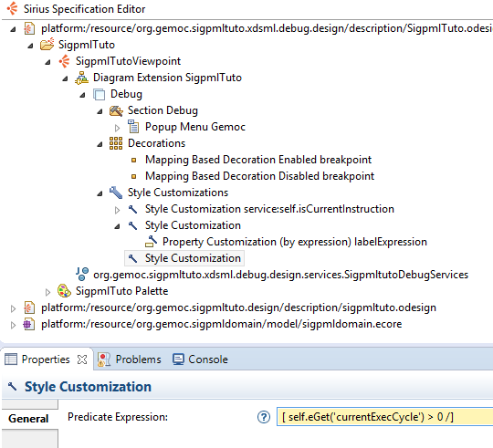
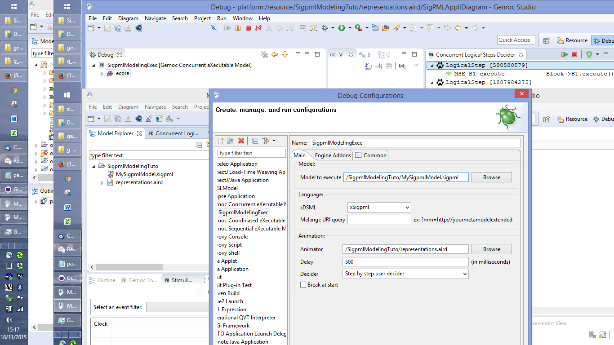
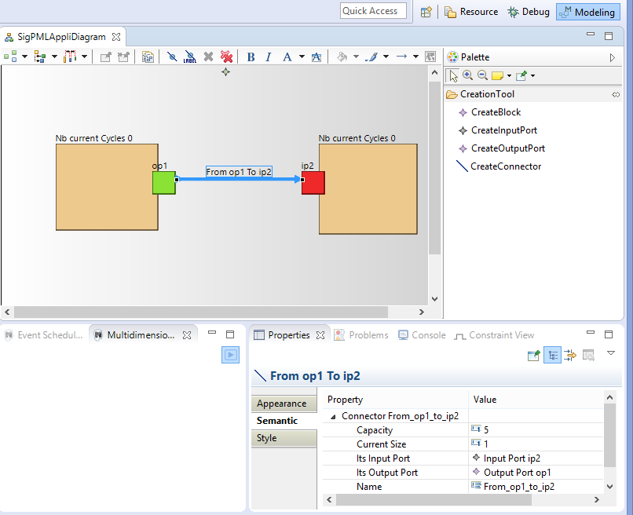

Table of Contents
SigPML is a Domain Specific Modeling Language dedicated to data flow processing. The concrete syntax is based on blocks, ports and connectors which associated ports to create directed flows. The DSML execution semantics defines that all the blocks of a model run concurrently regarding constraints on connector synchronization. The tutorial includes two execution semantics with the first one which defines a synchronization of the block execution with the pop and push actions of the connectors. The second one introduces read and write operations in the block semantics to decouple the connector access.
The final result of the SigPML model execution is showed on the next picture with a purple processing block which is an executing block and the brown block waits for a connector synchronization after its connector acces.

The abstract and the concrete syntax of SigPML language projects are provided as two archive files to download and extract in your file system.
The abstract syntax is given through a Ecore project The Ecore project. Or, you can create an Ecore project with the provided Ecore file.
The graphical concrete syntax is defined with the Sirius component. We provide a Sirius project as a zip file. You can also make your own Sirius project and use the online Sirius tutorial and the online Sirius Documentation.
The graphical editor model is given through a Sirius project as the graphical syntax of your DSML The Sirius project.
Or you can create a Sirius project with the provided odesign file The odesign file.
This language is based on the Ecore metamodel presented in the next figure.

A SigPML Application consists of a set of Blocks and a set of Connectors which are in relation with the blocks through input and output ports. The Connector concept owns the capacity attribute which defines the maximum number of access on the connector, and the currentSize attribute provides the current access number on the connector. The Port contains the rate attribute which defines the possible access number input and output ports.

First, start by creating a new xDSML project (New > Project > GEMOC Gemoc Concurrent / Gemoc Concurrent xDSML Project), with your desired name, for instance "org.gemoc.sample.SigpmlTuto". The next figure illustrates the xDSML wizard with the reference to the ecore project which containts the ecore model. The two others projects will be created next in the tutorial.
xDSML wizard definition. 
The wizard creates a Melange project as the root project of our xDSML to aggregate all the definitions of the composite parts.
The execution semantics of the xDSML must define that all the model blocks run concurrently. The block execution is constrained by the access on the connectors associated with the block through input and output ports. So an execute function of the blocks is synchronized on the connector behavior.
The rate to acces to the connector is defined as an attribute of the ports called rate.
So we must define: - the Execution Data (ED) and Execution Function (EF) into the DSA definition - the MoCC with a MoCCML model - the mapping between the MoCC and the DSA (ED and EF)
The DSA definition includes two steps : - adding Execution Data and Execution Function in the Ecore model. - creating aspects to weave with the Ecore model in Kermeta3
So first, Execution Data and Execution Function definitions are added to the domain model of SigPMLTuto ecore file. We extend the SigPML metamodel by adding one function execute() and two varaiables cycles and currentExecCycle in the Block class. So the block instances run the function execute() when the value of currentExecCycle is lower than the value of cycles.
The function and variables are added with the Ecore reflexive editor. In this tutorial, function and variables are provided in the initial ecore model.
Execution Function in the SigPML metamodel. 
The creation of the DSA project is on a click right menu on the Melange file "Create DSA Project for language "→select the name of the xDSML language (SigPMLTuto language).
DSA project creation. 
This project includes aspect definition which is weaved with the Java code corresponding the SigPML ecore model. The file name and classes suffix are proposed in the DSA wizard of the next figure.
DSA project wizard. 
The resulted DSA project is a k3dsa project with a sigpmlAspects.xtend file in the package org.gemoc.sample.xsigpml.k3dsa. This file contains the aspects that we want to add to the necessary classes in our case only the Block one. The resulting project is showed in the next figure.
K3dsa project with the aspect code provided in the next section. 
In this tutorial, the implementation of the functions is simple. The execute function increments the currentExecCycle of a block until its value is inferior to the cycles value.
The source code is available through Kermeta 3 aspects and showed below
package sigpml.aspects
import fr.inria.diverse.k3.al.annotationprocessor.Aspect
import sigpml.Application
import sigpml.Block
import sigpml.Connector
@Aspect(className=Application)
class ApplicationAspect {
}
@Aspect(className=Block)
class BlockAspect {
public int currentExecCycle = 0
def public void execute() {
if ( _self.currentExecCycle < _self.cycles )
_self.currentExecCycle = _self.currentExecCycle + 1
else
_self.currentExecCycle = 0
println(_self.name + "\n execute (" + _self.currentExecCycle + ")" )
}
}
@Aspect(className=Connector)
class ConnectorAspect {
}You must remove the aspects reference in the Melange file.

From the xDSML project, we select the associated wizard of the MoCC definition that helps to create the moCCML project. On the right click on the Melange file, select the menu "Create MoCC Library for language"→select the name of the language project→next→finish
MoCCML project creation. 
In the resulting project, we have a directory mocc with the MoCCML file.
In the MoCCML program, we define the constraint relation which will be referenced in the ECL program (in our case, the ConnectorSDF_PAM relation). This relation is based on an automaton definition.
This automaton describes how the events and variables are used to define a constraint automaton relative to each instance of the Connector class.
The source code is available through the MoCCML program and showed below
Unresolved directive in Tutorial_SigPML.asciidoc - include::SigPML/files/xSigpml.moccml[source code of the MocCCML program]
Now, we can visualize and edit if necessary the resulting MoCCML automaton. Switch to the modeling perspective (right high corner) and associted the nature modeling to the project (right click on the project→menu configure→Convert to modeling project). We set the MoCCML viewpoint definition on the project (right click on the project→Viewpoints selection→select MoCCML viewpoint).
To visualize the state machine, unfold the SigpmlTuto.moccml→select the State Relation based library for SigpmlTuto→new representation.
MoCCML diagram for the state based relation definition. 
To visualize the state machine, select the ConnectorSDF_PAM_Def block and on the right click slect new→state based diagram.
MoCCML state machine definition. 
In this editor, two layers are defined to have the state machine without the transition code, and the other layer "Detailed Transition Layer" add the transition code in the diagram. In this example, we have a state machine with an initial state, a state and three transition with the associated code (when clause with the specified clocks, an if condition with an expression on variables and an action code after the / )
After the MoCCML definition we define the mapping between this MoCC definition and the abstract syntax of our SigpmlTuto language.
The DSE definition is related to declare the Domain Specific Events which define the event interface of our language.
The two sections DSE and MoCC definitions are tightly coupled. So you can create the two projects and iterate between the two projects in progress.
From the xDSML project, we select the associated wizard of the DSE definition. Select the name of SigpmlTuto.melange on the right click→ Create DSE project for language →select the SigpmlTuto language→ok
DSE project creation. 
The DSE wizard helps to select the root model element, in our case the Application and finish.
DSE wizard. 
An ECL program defines the mapping between the domain model, including ED and EF, and the MoCC definition of the previous section. In this program, you declare the metaclasses that you want to select ED or EF, and associating them with a MoCC definition.
A metaclass is referenced as Context and in this scope we define an event relative to the EF and also invariants that must be satisfied in the context of the metaclasse.
In this tutorial, two contexts are declared for the metaclasses Block and Connector. In the context of Block an event execute is defined relative to the execution function of the same name in the Block metaclass. In the context of Connector, an invariant is declared based on the call of the relation declaration defined previously in the MoCCML model. The arguments of this relation are associated to the attributes of the metaclasses Connector and also we can access by navigation expression to the others Ports (for the rate attribute) and Block (for the execute EF).
The source code is available through the ECL program and showed below
import 'platform:/resource/org.gemoc.sigpmldomain/model/sigpmldomain.ecore' --import './sigpmldomain.ecore' ECLimport "platform:/resource/org.gemoc.sigpmltuto.mocc/mocc/Sigpmltuto.moccml" ECLimport "platform:/plugin/fr.inria.aoste.timesquare.ccslkernel.model/ccsllibrary/kernel.ccslLib" ECLimport "platform:/plugin/fr.inria.aoste.timesquare.ccslkernel.model/ccsllibrary/CCSL.ccslLib" package sigpml context Block def : execute : Event = self.execute() context Connector inv ConnectorComputing: let capacity : Integer = self.oclAsType(Connector).capacity in let inRate : Integer = self.itsInputPort.oclAsType(Port).rate in let outRate : Integer = self.itsOutputPort.oclAsType(Port).rate in let currentSize : Integer = self.oclAsType(Connector).currentSize in Relation ConnectorSDF_PAM ( self.itsOutputPort.oclAsType(OutputPort).owner.oclAsType(Block).execute, self.itsInputPort.oclAsType(InputPort).owner.oclAsType(Block).execute, capacity, inRate, outRate, currentSize ) endpackage --import './sigpmldomain.ecore' --ECLimport "./xSigpml.moccml" --ECLimport "./Sigpmltuto.moccml"
ECL Implemenattion. 
At the end of this step the SigPML language is completely in terms of the metamodel, the graphical syntax, the behavior code of the functions, the expression of the concurrent semantics and the mapping between them.
The last step is to define the animation view of the models as a debug extension of the graphical syntax.
As the section dedicated to the graphical syntax, the animator is defined as a Sirius viewpoint based on the odesign file
To create a debug viewpoint, on the Melange file we select "Create Animator Project for language"→select the language name→Extends an existing diagram description (as the next picture).
Create a debug representation. 
Now a Sirius project is created with a file odesign in the description folder. Open the odesign file and on a right click select "Load ressource" and select the odesign file of the the initial graphical syntax as in the next picture.
Select the odesign ressource. 
Now we edit the odesign file and customizing the debug layer. Open the Debug layer and add Style cuistomizations as the next picture.
Adding Style customization. 
On this style, we add a property customization to change the label of the Block in our future model.
Adding Property customization. 
We fill the properties of this element. First the field AppliedOn to select the graphical element of the Block (Square light_chocolate).
Select Graphical element. 
Fill the next fileds like the next picture.
.Property Customization.

We add another style customization and fill the predicate expression as the next picture. .Second Style Customization 
On this style, we add a property customization (by expression) to change the block color under the previous condition when the currentExecCycle > 0
Adding Property customization. 
For now the language is totaly defined and executable, so we can used the SigPML Language !!
From the language workbench, the Sigpml modeling workbench can be used to create a model and execute it.
To launch the modeling workbench dedicated to the Sigpml language, we create an eclipse apllication configuration to run the gemocstudio associated with the xDSML definition. The current parameters are set conforming to the parameters of the next picture.
Modeling Workbench launching. 
To obtain modeling workbench adequate performances, we set the VM parameters in the Arguments tab to
-Xmx3000m -Xms3000m
First you create a sigpml model or you can install the given model in an eclipse project The modeling project.
To execute a model, we create a debug configuration and set the parameters conforming to the picture The debug launching configuration.
The debug launching configuration. 
In this configuration, we select the step by step execution with user selection for the next logical step.
When the model is executing, the overview of the modeling workbench is presented in the next picture.
The executed Sigpml model. 
The views are extended with the VCD view which presents all the clocks define in the MoccML model with a tick clock during the logical steps.
The Sigpml model with a VCD view.
The sigpml model is edited in the model editor and we can select model elements and change the model element properties.
The Sigpml model element properties. 
To start the execution of the model, we select a logical step to execute the model in the Concurrent Logical Steps Decider in the upper right window. The logical step contains the event MSE\_B1\_execute so to select this event the Mocml model activates the execute function of the Block B1. So the animation view of the model is updated due to the expression defines in the animation viewpoint.
Start the Sigpml model. 
After, we select again the logical steps to execute and the model progesses and the exection trace is visualized in the timeline view.
.The Sigpml model trace timeline

We can select a logical step from the past in the timeline, to retstart the execution from this logical step.
In this case, a branch appears in the timeline view and we continue the logical step selection.
.Timeline branches after backwards

To stop the animation, we select the red button in the Gemoc engines status view or in the Concurrent Logical Steps Decider.